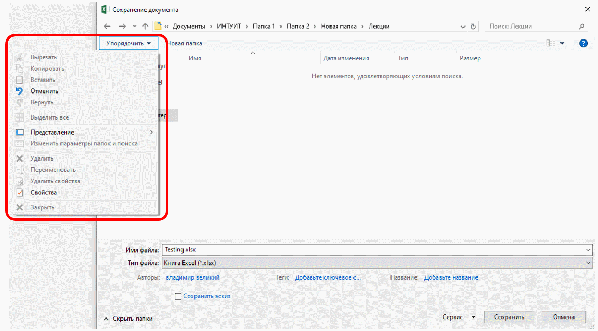
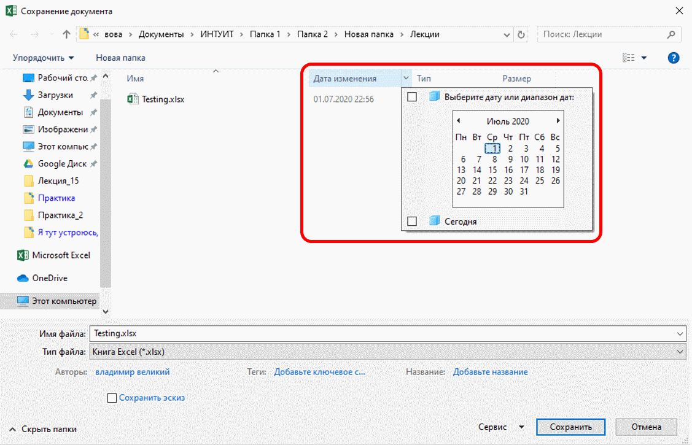
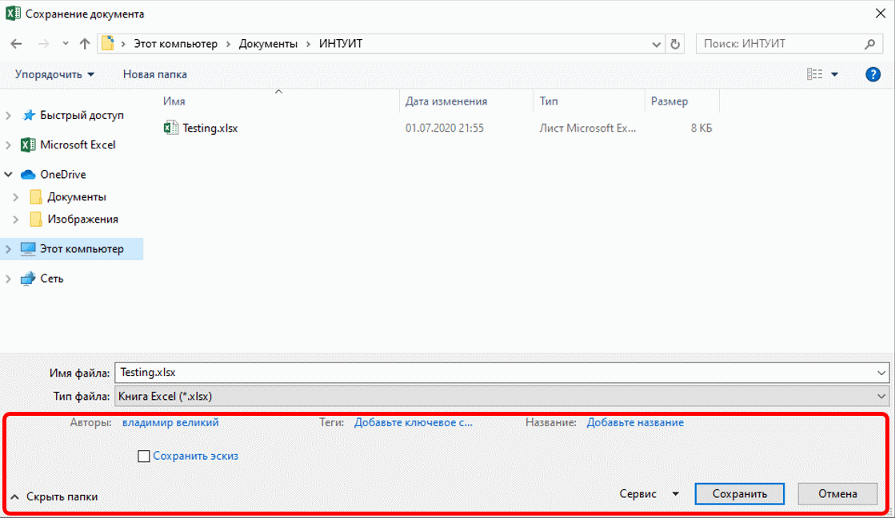
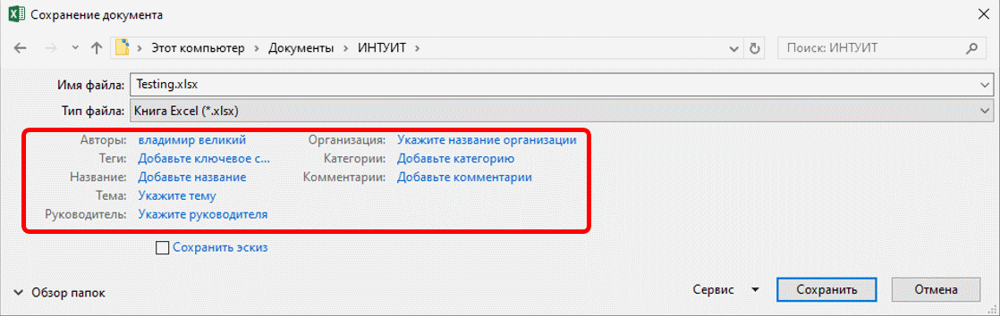

-
Поле Поиск (2 на рис. 2.2) предназначено для поиска файлов в текущей папке и во всех вложенных папках.
Кнопки Назад и Далее (3 на рис. 2.2) позволяют перейти к предыдущей папке или вернуться в только что покинутую. Если щелкнуть по стрелке, расположенной справа от этих кнопок, отобразится список всех папок, которые были отображены в текущем окне.
Щелчок по кнопке Упорядочить (4 на рис. 2.2) отображает меню (рис. 2.5). Меню содержит команды для работы с файлами ( Вырезать, Копировать, Удалить и др.), свойствами файлов, а также команды для настройки внешнего вида окна ( Раскладка ). Команды подчиненного меню Раскладка позволяют отобразить или скрыть Панель навигации (расположена в левой части окна – 8 на рис. 2.2), Панель подробностей, предназначенную для отображения некоторых свойств файла (в окне на рис. 2.2 отсутствует), Панель просмотра, предназначенную для предварительного просмотра файла (в окне на рис. 2.2 отсутствует).

Рис. 2.5. Меню Упорядочить
Кнопка Виды (5 на рис. 2.2) предназначена для выбора режима отображения значков папок и файлов в окне. Как и в Проводнике Windows может быть выбран один из семи режимов: Огромные значки, Крупные значки, Обычные значки, Мелкие значки, Список, Таблица, Плитка. Для практической работы чаще всего используют режимы Мелкие значки и Список, в которых в окне отображается максимальное количество значков. В режиме Таблица можно просмотреть некоторые свойства файлов.
Независимо от выбранного режима отображения значков папок и файлов, их можно сортировать, используя кнопки Имя, Дата изменения, Тип, Размер, Ключевые слова (6 на рис. 2.2). При щелчке правой кнопкой мыши по любой из этих кнопок, отображается контекстное меню, в котором можно выбрать и другие поля сортировки, например, Авторы, Заголовок и др. Помимо сортировки, указанные кнопки можно использовать и как фильтр. Для этого необходимо навести указатель мыши на кнопку, и щелкнуть по появившейся стрелке. Например, можно фильтровать файлы по дате изменения (рис. 2.6).

Рис. 2.6. Фильтрация файлов по дате изменения
Щелчок по кнопке Новая папка (7 на рис. 2.2) создает новую папку в текущей папке. После создания папки следует ввести ее имя.
Панель навигации, которая называется также Область переходов (8 на рис. 2.2), содержит ссылки на некоторые папки пользователя ( C:\Users\Имя_пользователя ), специальные папки Windows, а также папки поиска. Для удобства работы границу между Панелью навигации и остальной частью окна можно перетащить вправо или влево.
Щелчок по ссылке Быстрый доступ открывает в окне виртуальную папку с ярлыками папок, недавно открывавшихся пользователем. Щелчок по ссылке Недавно измененные открывает в окне виртуальную папку с ярлыками файлов, недавно открывавшихся пользователем.
Поле Имя файла (9 на рис. 2.2) предназначено для указания имени файла при открытии или сохранении.
Кнопка с указанием типа файла (10 на рис. 2.2) открывает меню, в котором можно выбрать тип файла.
Окно сохранения документа, в отличие от других окон, имеет область свойств документа (рис. 2.7). В ней можно указать автора документа и ключевые слова.

Рис. 2.7. Окно Сохранение документа
В этой же области имеется ссылка Скрыть папки. Щелчок по ней скрывает Панель навигации и отображает более полный список свойств документа (рис. 2.8). Если список свойств не отображается, увеличьте размер окна по вертикали. Для заполнения свойств документа щелкните мышью в соответствующем поле и введите информацию с клавиатуры или извлеките из буфера обмена. Для отображения Панели навигации щелкните по ссылке Обзор папок.

Рис. 2.8. Окно Сохранение документа со свернутой Панелью навигации